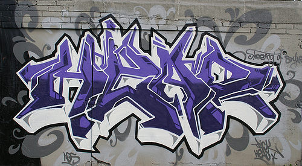
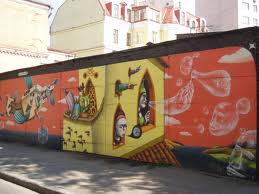
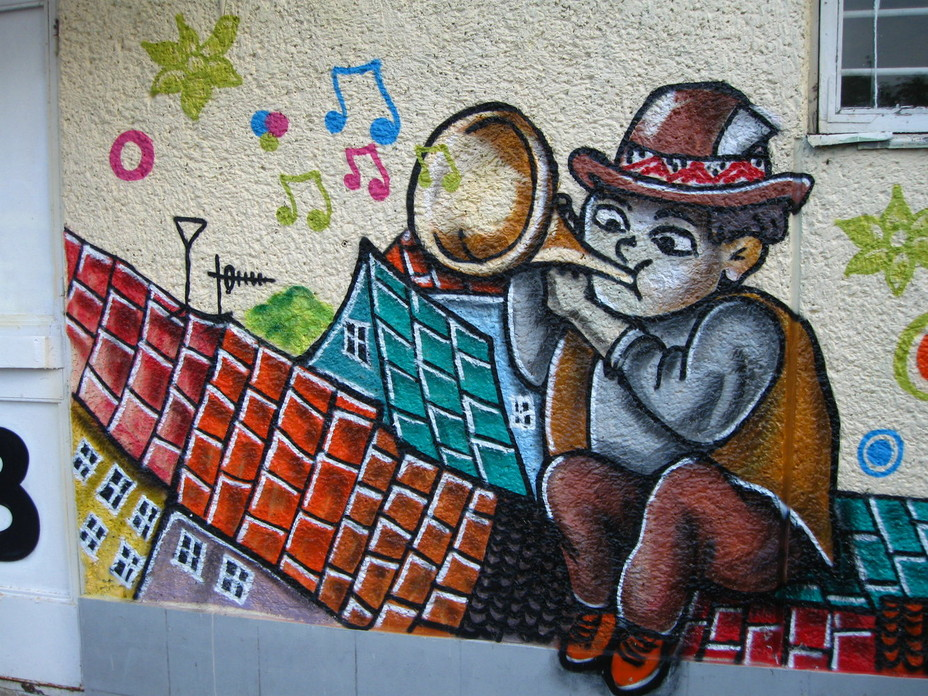

Графіті
Нині це поняття розширило свої межі, під графіті розуміють будь-які неофіційні публічні тексти, разом зі сучасними. Та більше, саме сучасні привертають увагу вчених і журналістів, тому в свідомості людини нашого часу зі словом графіті асоціюється передусім добре відомий їй розпис будинків, прогонів на поверхах, ліфтів, вбиралень тощо.
За останні чотири десятиліття про сучасні графіті написано сотні праць. Декілька років тому це явище почали активно фіксувати й осмислювати російські та українські вчені, але на цей момент кількість російських наукових статей і публікацій про графіті не перевищує десяти.
У нову стадію розвитку графіті ввійшли в другій половині XX ст. Дослідники відзначають два фактори, які мали вирішальне значення для виникнення нових форм на базі традиційних. По-перше, поява фарби в аерозолів, по-друге, експансія молодіжної культури в 1950-1960-х роках у США і Західній Европі, що сприяло різкому підвищенню кількості графіті і появі написів та зображень в якісно новому вигляді в тому числі і в Україні.
Одним з основних різновидів графіті нового покоління є графіті молодіжних субкультур. Важлива відмінність між традиційними (старими) й субкультурними графіті — ступінь доступності змісту для стороннього глядача. Графіті субкультури, які доступні для споглядання кожному, хто проходить повз, залишаються, попри те, закритим для непосвячених каналом комунікації.
|  |  |  |
Древні графіті — важлива складової слов'янської епіграфіки і культурології. Тематика сучасних графіті набагато різноманітніша, але провідною функцією їх донині залишається прагнення до діалогу, комунікації в рамках визначеної соціальної групи. Історична роль древніх графіті-автографів досить вагома, оскільки саме завдяки їм можна установити соціальний статус тих, хто їх писав, рівень розвитку писемності в суспільстві на визначеному історичному етапі. Нам поталанило — древні графіті збереглися, незважаючи на час, а також негативне ставлення до них. Однак збереглися вони насамперед завдяки тому, що техніка написання і місце виконання (культові спорудження, стіни церков і монастирів) природно сприяли цьому.
Графіті — це насамперед закодований текст, символіка якого відбиває визначені події культурного, політичного або громадського життя соціуму, членами якого є його виконавці. Саме контекст розкриває основний зміст того, про що говориться в конкретному графіті, підкреслюючи приналежність одиничного до загальної традиції
Традиційними для нашого суспільства завжди були графіті "tags" (найпростіші за способом виконання написи, найчастіше — автографи, у яких автор використовує тільки один колір, а букви і малюнки написані або видряпані на поверхні в один шар). Саме такого роду напису виконували на стінах історичних споруджень упродовж сторіч. Ця традиція зберігалася в радянські часи (про що свідчить студентський, шкільний, тюремний фольклор, а також окремі графіті на зовнішніх стінах), у пострадянський період виникла "традиція балонів" (виконання складних за композицією та кольорною гамою малюнків) і численні стилі виконання настінних малюнків. Українські графіті останніх десятиліть (посттоталітарних часів) особливо складні, оскільки різноманіття тематики і стилів виконання продиктовано як змінами зовнішнього характеру, так і внутрішнім конфліктом нового покоління. Графіті служить для підлітків шляхом комунікації з зовнішнім світом, світом дорослих, шляхом самоствердження у власному середовищі.
Вгору